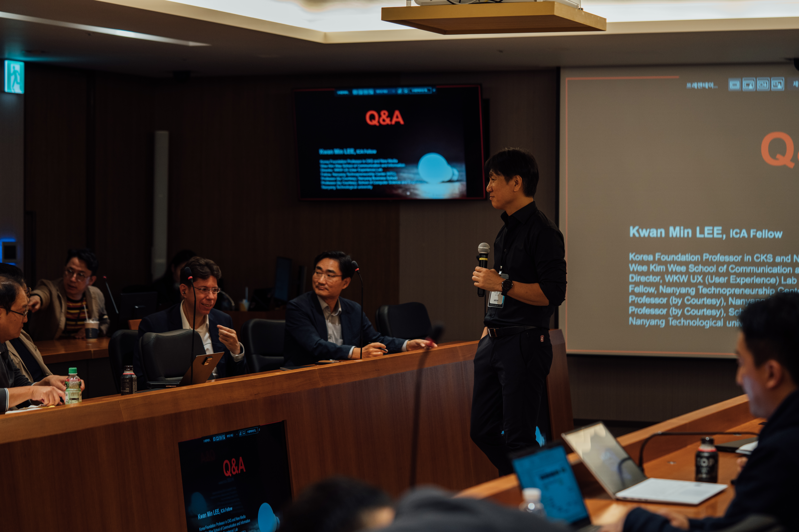
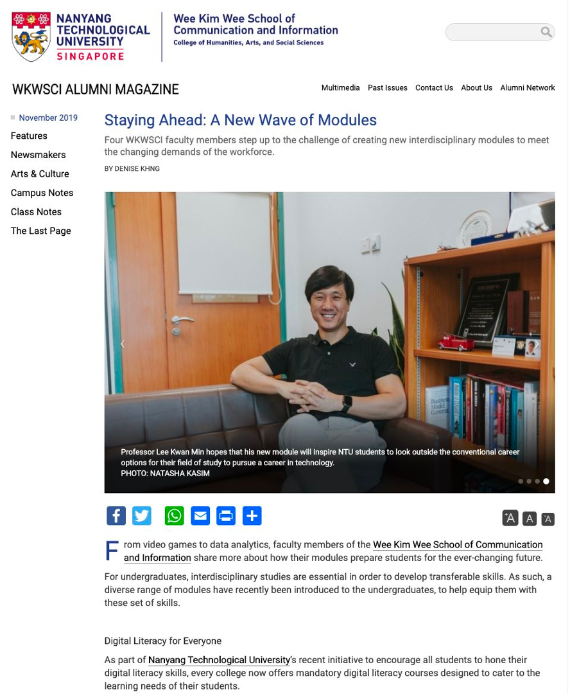
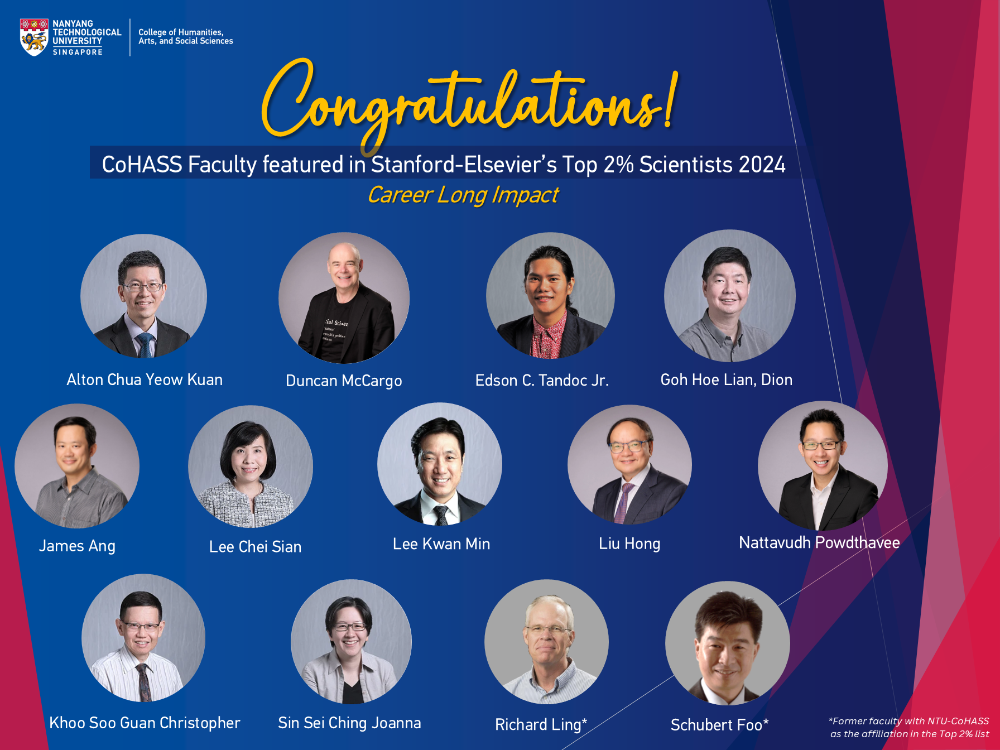

Biography
Kwan Min Lee (이관민, Ph.D., Stanford) is the inaugural Korea Foundation Endowed Chair Professor in Contemporary Korean Society and New Media, and the Director of the UX (User Experience) Lab, Human-AI Interaction Lab (HAIL), and Contemporary Korea Studies Lab (KSL) at the Wee Kim Wee School of Communication and Information (WKWSCI), Nanyang Technological University (NTU), Singapore. He also holds courtesy joint professorships at the School of Computer Science and Engineering (College of Computing and Data Science) and the Nanyang Business School at NTU.
Previously, Lee was Vice President and Director of User Experience (UX) at Samsung Electronics, where he spearheaded UX innovation for the Visual Display Division, including the award-winning Samsung Smart TV Smart Hub and Smart Controller. He also founded and directed Samsung’s Creative Lab (C-Lab), the most successful internal incubation and open innovation initiative at Samsung. Prior to Samsung and NTU, Lee was the founding director of the Interaction Science Research Center and founding WCU Professor at Sungkyunkwan University (SKKU), and taught for 12 years as a tenured professor at the Annenberg School for Communication and Journalism at the University of Southern California (USC).
Lee specializes in UX research and design, open innovation, and human-machine interaction, encompassing Human-Computer Interaction (HCI), Human-Robot Interaction (HRI), and Human-AI Interaction (HAI). His research findings have been featured widely by international media including The Wall Street Journal, The Washington Post, BBC News, USA Today, and major Asian news agencies.
He has secured more than 12 million US dollars in competitive research grants from the National Research Foundation, National Science Foundation, Annenberg Foundation, Singapore Ministry of Education, Samsung Electronics, Hyundai Motors, and international agencies. Lee is an elected Fellow of the International Communication Association (ICA)—the highest recognition of lifetime scholarly contributions in the discipline—and one of the most frequently cited scholars globally in Communication and UX (cited nearly 13,000 times on Google Scholar).
Key Distinctions
- Korea Foundation Endowed Chair: Inaugural chair professor in Contemporary Korean Society & New Media at NTU Singapore.
- Ph.D., Stanford University: Doctoral scholar in Communication with three endowed fellowships; mentored by the late Prof. Clifford Nass.
- ICA Fellow: Elected Fellow of the International Communication Association (2019) for distinguished lifetime scholarly contributions.
- Samsung VP & C-Lab Founder: Former Vice President of UX; directed Samsung Smart TV UI and founded Samsung's internal venture incubator C-Lab.
- $12M+ Research Funding: Awarded competitive federal and corporate grants (NSF, Annenberg, Singapore MOE, Samsung, Hyundai).
- 10 Granted US Patents: Inventions in smart display interfaces, transitional graphical user interfaces, and remote control systems.



Appointments
Academic appointments, institutional leadership, and corporate advisory history spanning Stanford, USC, SKKU, Samsung Electronics, and NTU Singapore.
Academic Appointments
Inaugural Korea Foundation Endowed Chair Professor. Leading foundational research in Human-AI Interaction, media psychology, virtual presence, and contemporary Korean cultural technologies.
Directing the Human-AI Interaction Lab (HAIL), the User Experience (UX) Lab, and the Contemporary Korea Studies Lab, overseeing empirical investigations, doctoral research, and high-impact federal grant initiatives.
Collaborating on intelligent conversational systems, multimodal computer-human interfaces, and human-centered autonomous agents.
Research and executive education on open corporate innovation, user experience strategy, customer experience management, and digital business transformation.
- Fellow, NTU Institute of Science and Technology for Humanity (NISTH)
- Fellow, Nanyang Entrepreneurship Academy (NTUPreneur)
- Fellow, Nanyang Technopreneurship Center (NTC, 2019 – 2022)
- Fellow, Institute on Asian Consumer Insight (ACI), Nanyang Business School
- Member, NTU Teaching Council
- Member, Faculty Senate on University Development
Awarded the Yushan Scholar chair by the Ministry of Education in Taiwan. Led international masterclasses and collaborative research on metaverse experience, AI interaction, and media psychology.
Recruited under the Ministry of Education, Science, & Technology (MEST) flagship WCU Program. Served as Founding Director and Principal Investigator (PI) of the WCU Program, founding South Korea's first interdisciplinary Department of Interaction Science and securing multi-million-dollar government and corporate research funding.
Conducted collaborative investigations into ambient intelligent environments, wearable displays, and cognitive presence in spatial media architectures.
Served for 12 years as one of the youngest tenured faculty members at USC. Affiliated faculty with the Center for Robotics and Embedded Systems (CRES) and the Center for Telecommunication Management (CTM). Honored with the university-wide USC-Mellon Award for Excellence in Mentoring (2007).
Doctoral training under the late Prof. Clifford Nass. Conducted pioneering empirical experiments in synthetic speech personality, human-agent interaction, and presence theory. Served as Head Graduate (Ph.D.) TA and was recipient of three competitive Stanford endowed fellowships.
Industry Appointments
Spearheaded UX innovation for Samsung's television, audio, and visual display lines. Led the redesign that replaced complex 70-button TV remotes with the ergonomic Smart Hub and Smart Remote, winning the CES Best of Innovations Award (2013, 2014) and iF Design Award.
Conceptualized, founded, and directed Samsung Creative Lab (C-Lab)—Samsung's premier internal venture incubator that has launched hundreds of products, spun off dozens of venture companies, and garnered over 40 CES Innovation Awards. Also served as Executive Advisor to the President of Samsung Electronics.
Conducted human-computer interaction research on conversational speech user interfaces, multimodal messaging systems, and speech recognition usability.
Evaluated behavioral responses and speech portal usability for telephone-based voice navigation before Quack.com was acquired by AOL Time Warner.
Advising & Corporate Consultancy
High-level strategic advisor to corporate leadership on display ecosystems, smart home devices, and Human-Robot Interaction (HRI) at Samsung Advanced Institute of Technology (SAIT).
Strategic consultant on smart car interfaces, in-vehicle conversational speech systems, autonomous vehicle trust, and mobility UX innovation.
Advisory on evolutionary psychology, customer experience innovation, and connected car interfaces.
Corporate advisor on media entertainment technologies, digital contents, and global cultural platform strategies.
- 에피카 (Epikar): Korea’s leading mobility platform startup • Chief Scientific Advisor (CSA)
- 두물머리 (Doomoolmori): Korea’s premier RoboAdvisor fintech startup • Corporate Advisor
- SmileGate, ESLEdu, Moat AI, Stoic Entertainment: Game psychology, XR, and generative AI advisor
Education & Degrees
Dissertation on social presence and psychological responses to synthesized speech and computer personality under the late Prof. Clifford Nass. Recipient of three competitive Stanford endowed fellowships, including Asia Pacific Scholar Fellow.
Concentration in media psychology, communication technology research, and quantitative empirical methodology.
Graduated with honors in Journalism and Mass Communication; foundational training in social theory, empirical research methods, and media systems.
Research
Theoretical frameworks, behavioral paradigms, and experimental laboratories investigating the psychological mechanisms of human interaction with intelligent technologies.
Core Research Domains
Psychological models of trust, transparency, and collaboration with autonomous generative AI agents. Developing frameworks for Explainable AI (XAI), synthetic personality cues, and multi-agent social simulations for public opinion forecasting.
Empirical investigations on physical embodiment, tactile interaction, and social presence in companion, educational, and service robots. Examining behavioral compliance and emotional bonding with artificial creatures.
Author of the foundational treatise Presence, Explicated (2004), cited over 3,000 times. Conceptualizing and measuring physical, social, and self-presence across virtual reality (VR), augmented reality (AR), and the metaverse.
Translating cognitive and evolutionary psychology into commercial interaction paradigms. Designing intuitive multimodal interfaces across smart displays, speech user interfaces (SUI), gesture controllers, and in-vehicle systems.
Signature Framework: Deep Thought Innovation (DTI)
Conceptualized by Prof. Kwan Min Lee, Deep Thought Innovation (DTI) establishes a vital dichotomy between two complementary drivers of progress:
- Deep Tech Innovation (DT 1): Harnesses breakthroughs in the natural sciences and engineering to produce hardware and software solutions (semiconductors, AI algorithms, biotechnology, advanced materials).
- Deep Thought Innovation (DT 2): Emerges from the social sciences and humanities to address "wicked social problems" (AI ethics, social inequality, aging society, digital wellbeing) using human-centered Design Thinking methods.
Active DTI Projects: (1) AI Social Simulation Project — Utilizing large-scale multi-agent simulations to model public opinion and evaluate policy interventions before rollout. (2) Innovation in Contemporary Korean Cultural Products & Technologies — Analyzing how Hallyu (Korean Wave) content interfaces with embodied AI and deep-tech platforms.
Research Laboratories at NTU Singapore
Equipped with state-of-the-art physiological, eye-tracking, and behavioral measurement apparatus to evaluate human perception across emerging media and smart interfaces.
Dedicated to human-centered AI agent UX, conversational user experience, agent embodiment, and AI ethics.
Interdisciplinary hub examining Korean media culture, technological innovation in East Asia, and the global impact of the Korean Wave.
Competitive Grants ($12M+ USD)
Prof. Lee's research program has received competitive grant funding exceeding 12 million US dollars from premier national and corporate bodies:
- National Science Foundation (NSF, USA): Fundamental research in human-computer interaction, collaborative virtual environments, and social robotics.
- Annenberg Foundation (USA): Endowed grant initiatives in new media, communication technology, and digital culture.
- Ministry of Education (MOE, Singapore): Tier 1 and Tier 2 competitive academic research grants in Human-AI interaction and cognitive presence.
- Ministry of Education, Science and Technology (S. Korea): Flagship World Class University (WCU) grant establishing the Department of Interaction Science.
- Korea Information Strategy Development Institute (KISDI): National ICT policy development, future digital media ecosystems, and telecommunications standardization.
- Samsung Electronics & Hyundai Motors: Corporate industry research grants investigating smart TV interfaces, in-vehicle UX, and conversational voice agents.
Publications
Complete record of 63 refereed articles, book chapters, and conference proceedings indexed on ResearchGate, Google Scholar, and major academic databases.
Virtual reality (VR) is gaining mainstream attention, but little is known about the effects of VR advertising (VR ad). This study examined 360-degree video-based advertising, which presented an entire view of the scene and allowed users to pan around the view interactively.
Human–computer interaction (HCI) is an interdisciplinary field that studies how people interact with machines in general and with computing systems in particular.
Presence refers to the psychological state in which the virtuality of experience is unnoticed. It occurs when technology users do not recognize the technology-mediated nature of experiencing.
This study investigated the effects of trait-level hostility, interface types, and character identification on aggressive thoughts and overall game experience after playing a violent video game.
How do participants respond to and prefer either a common voice agent that follows them across platforms or a community of specialist agents connected to specific hardware platform. This study examines users’ gender as it relates to preference for voice-control system (VCS).
This study examines TV news networks' coverage of the smartphone from the news framing perspective. A content analysis was conducted on 2,792 TV news transcripts about the smartphone from four major TV news networks (ABC, CBS, NBC, and CNN).
The study investigated whether apologetic synthetic gendered voices affect users’ perception of an error-prone VUI. In a TV viewing task, participants interacted with the conversational TV.
The present study investigates the effects of relative positions of stereoscopic objects (PSO) and seat location on viewers’ psychological responses.
The current study investigates the effects of 3D displays (shuttered display vs. polarized display). People experienced superior fidelity and brightness when they watched 2D still images on a shuttered display.
This study examines the influence on impression formation of Multimedia Caller Identification (MCID), which is a new video-content display application for mobile phones.
Personality is an essential feature for social interaction that contributes to person's preference to products. In this paper, using M-CID in mobile advertisement, the similarity attraction effect between user and ads personalities is examined.
It remains unsettled whether the design of humanlike interfaces is the gold standard in HCI. This study tested how the degree of humanness of the interfaces and the perceived interactants impact individuals' affective and behavioral responses.
This study examined the factors that are associated with people’s intention to upload video content online within the framework of the theory of planned behavior (TPB).
Networked interactivity is one of the essential factors that differentiate recent online educational games from traditional stand-alone CD-based games.
In this study, the effect of the user choice on social responses to computer-synthesized speech is investigated using the choice paradigm.
In this paper, we examined advertising effect of two different types of additional information in panoramic view service on the online map.
A new generation of exercise video games (exergames) shows promise as a tool to motivate and engage users in physical activity.
Multimedia caller identification (MCID) is a new application for mobile phones that displays video contents. Its roles in impression formation were examined in automobile telemarketing context.
Interactive three-dimensional (3D) virtual environments like Second Life have great potential as venues for effective e-health marketing and e-brand management.
Two experiments examined the effects of exposure to a pre-game story prior to playing a computer game.
The present study investigates the impact of the experience of role playing a violent character in a video game on attitudes towards violent crimes and criminals.
This study examines the role of local government in the deployment of municipal Wi-Fi networks from the perspective of path dependency and social shaping of technology.
The inherent challenges and opportunities of mobile services design have recently led designers to embrace the theory of presence.
In the current study, we examined the impact of playing Nintendo Wii games on the psychological and physical well-being of seniors in a long-term care facility.
Intrinsic motivation has been reported to be one of the strongest determinants of exercise adherence. The role of competition in exergames was studied.
This study examines the factors that influence instructors’ adoption and use of an Internet-based course management system and tests the applicability of TAM.
This study tests the effects of online discussions about a company in an online news forum on people's perception of the corporate reputation of the company.
This study examines children’s social responses to gender cues in synthesized speech in a computer-based instruction setting.
Personality is an essential feature for creating socially interactive robots. Using AIBO, a social robotic pet developed by Sony, we examined personality in HRI.
Two experiments were conducted to investigate the effects of physical embodiment in human–agent interaction.
This study examines the relationship between three types of Internet use and two types of political efficacy among U.S. college students.
This study tests the effect of long-term artificial development of a robot on users' feelings of social presence and social responses toward the robot.
This article reports on an experiment that critically tests user preference for an input modality (speech vs. DTMF) in a phone-based message retrieval system.
Despite increasing dominance of virtual experience in everyday life, this paper defines what virtual experience is and reviews research traditions.
We demonstrate via two experiments in e-commerce contexts that social responses to technology influence feelings of social presence.
Recent industry white papers explore presence as one of the hottest design trends for mobile services. Building on this viewpoint, we show presence is a rich construct.
This paper explains the fundamental psychological and evolutionary reasons why human beings feel presence when using media or simulation technologies.
In this experimental study, participants used interfaces designed for a personal computer or a handheld on different devices.
Two experiments examine the effect of multiple synthetic voices in an e-commerce context.
This seminal article reviews literature on presence, establishes its conceptualization, and presents a comprehensive typology (physical, social, and self-presence). Cited over 3,000 times.
Two experiments were conducted to investigate the relative effectiveness of physical embodiment on social presence of social robots.
This study examines the interaction effect between user factors and media factors on feelings of social presence in human-computer interfaces.
The advent of mobile devices and wireless Internet is having a profound impact on communication and interaction paradigms.
We demonstrate via experiments that social responses to technology influence feelings of social presence.
Would people exhibit similarity-attraction and consistency-attraction toward computer-generated speech? Experiments test recognition of personality cues in synthetic speech.
This study examines whether people respond to paralinguistic personality cues in computer-generated speech in the same way as human speech.
Applying Bandura's social learning theory, this paper proposes a theoretical framework for analyzing the effect of MUD playing on user self efficacy.
Work & Innovation
Executive leadership at Samsung Electronics, founding Samsung Creative Lab (C-Lab), 10 granted US patents, and senior corporate advisory practice.
Samsung Electronics Leadership (2011–2015)
As Vice President and UX Group Director in Samsung’s Visual Display Division, Kwan Min Lee bridged world-class academic behavioral research with industrial production. He spearheaded the design architecture that transformed the television from a passive monitor into an interactive smart device.
Lee directed the multi-screen UX and physical interaction design for Samsung’s Smart TV Smart Hub (2012–2015). Under his Task Force leadership, Samsung completely reimagined the television remote, replacing over 70 legacy plastic buttons with an ergonomic motion-and-touch trackpad that won the Best of Innovations Award at CES 2013 and 2014. The Wall Street Journal highlighted the device in an extensive review titled “Review: Samsung Fixes the TV Remote.”
In 2012, Lee conceptualized, founded, and led Samsung’s Creative Lab (C-Lab)—an internal innovation incubator designed to nurture entrepreneurial ventures among Samsung engineers and designers. C-Lab projects receive funding, workspace, and a year of autonomous development without corporate bureaucracy. To date, C-Lab has incubated hundreds of successful projects, spun off dozens of venture-backed startups, and produced more than 40 CES Innovation Honorees.
Conceptualized, prototyped, and led development of the portable large-screen device later commercialized globally by Samsung Mobile Division as the Galaxy View in the USA, Europe, and South Korea.
Winner of the Samsung Electronics Annual Award (Innovation Category, 2015). Displayed at IFA Berlin and Raemian Model House, and deployed across flagship retail stores (8-Seconds, BeanPole) in South Korea.
Granted US Patents (10 Official Inventions)
Below are official United States patents granted by the USPTO, linked directly to their Google Patents records:
Corporate Advisory & Strategic Consulting
Prof. Lee provides executive advisory services across four specialized domains:
Guiding executive leadership in business directions related to user experience (UX), customer experience (CX), new media, human-computer interaction, and metaverse ecosystems.
Assisting companies in launching new consumer products and digital platforms by integrating human psychology, cognitive presence, and user-centric design.
Continuous advice to corporate R&D divisions and innovation centers, covering research agendas, methodology, and empirical evaluation processes.
Multi-session executive workshops and design thinking sprints to generate breakthrough business ideas and tangible prototypes with stakeholders.
Representative Collaborators & Clients: Samsung Electronics, Hyundai Motors, KIA Worldwide, CJ Group, SmileGate, Epikar, ESLEdu, Moat AI, Stoic Entertainment, AOL, Doomoolmori.
Advisory Inquiries: Please email a brief introduction and scope of needs to kwanminlee@ntu.edu.sg.
Recognition
Fellowships, academic distinctions, and international product design honors awarded by academia and global industry.
Academic Fellowships & Distinctions
Commercial Product & Design Awards (Directed at Samsung Electronics)
Editorial Board Leadership
Prof. Lee has served on the editorial boards of more than 10 top-tier international journals:
- Journal of Communication • Editorial Board Member
- Human Communication Research • Editorial Board Member
- Journal of Computer-Mediated Communication • Editorial Board Member
- Media Psychology • Editorial Board Member
- Journal of Broadcasting & Electronic Media • Editorial Board Member
- International Journal of Human Computer Interaction • Editorial Board Member
- Presence: Teleoperators & Virtual Environments • Associate Editor (MIT Press)
- Computers in Human Behavior • Associate Editor
- MIT CogNet • Global Advisory Board Member (one of 9 worldwide)
Events, Talks & Keynotes
Compilation of representative keynotes, presidential briefings, and invited addresses delivered at academic congresses and industry conventions:
People & Collaborators
Research team members, active doctoral scholars, and academic co-authors across NTU, Stanford, USC, SKKU, and international institutions.
Active Lab Researchers & Scholars
Key Academic Co-Authors & Collaborators
- Prof. Hayeon Song • Sungkyunkwan University (SKKU)
- Prof. Younbo Jung • Nanyang Technological University (NTU)
- Prof. Namkee Park • Yonsei University
- Prof. Wei Peng • Michigan State University (MSU)
- Prof. Donghee Shin • Texas Tech University
- Prof. Eui Jun Jeong • Konkuk University
- Prof. Seok Kang • University of Texas at San Antonio
- Prof. Seunga Venus Jin • University of Southern California (USC)
- Dr. Jennifer Lai • IBM T. J. Watson Research Center
- Late Prof. Clifford Nass • Stanford University
Mentorship & Academic Legacy
Throughout his faculty tenure at USC, SKKU, and NTU, Prof. Lee has mentored dozens of Ph.D. scholars, postdoctoral fellows, and master's students who now hold tenured faculty chairs, research scientist positions, and UX leadership roles across North America, Asia, and Europe. In 2007, he received the USC-Mellon Award for Excellence in Mentoring, the University of Southern California's premier recognition for professional mentorship.
Media & News
Op-ed columns, international press coverage, and television features covering Prof. Lee's research and corporate innovation milestones.